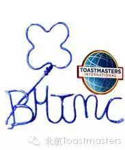

Toastmasters International is a world leader in communication and leadership development. Our membership is 313,000 strong. Members improve their speaking and leadership skills by attending one of the 14,650 clubs in 126 countries that make up our global network of meeting locations.
The world needs leaders. Leaders head families, coach teams, run businesses and mentor others. These leaders must not only accomplish, they must communicate. By regularly giving speeches, gaining feedback, leading teams and guiding others to achieve their goals in a supportive atmosphere, leaders emerge from the Toastmasters program. Every Toastmasters journey begins with a single speech. During their journey, they learn to tell their stories. They listen and answer. They plan and lead. They give feedback—and accept it. Through our community of learners, they find their path to leadership.
Toastmasters International Mission
We empower individuals to become more effective communicators and leaders.
Club Mission
We provide a supportive and positive learning experience in which members are empowered to develop communication and leadership skills, result ing in greater self-confidence and personal growth.
Toastmasters International Values
Integrity
Respect
Service
Excellence
Toastmasters International Envisioned Future
To be the first-choice provider of dynamic, high-value, experiential communication and leadership skills development.
About Beihang Toastmasters Club

北航自己的英语演讲俱乐部, 欢迎各位同学来这里练口语、交朋友，更重要的是，
在这里，你不必担心说得不好，也不必担心自己基础不够，我们的成员大多数也并非英文专业。然而，我们这里有专业的Evaluators，
如何从容地面对几十上百人，控制紧张情绪？
如何组织大脑中的想法并合理地表达出来？
如何通过适当的肢体语言和眼神交流与听众互动？
如何通过语调的变化来感染听众？
以上种种都是我们要解决的问题。
我们为你提供一个舞台，你所要做的，只是在TableTopic环节中举手上台。
我们为你提供一整套演讲方案，你所要做的，只是在Prepared Speech环节中磨练自己。
关上电脑，走出实验室，冲出自己的心理舒适区，
May you——
Be the change you wish to see in the world!